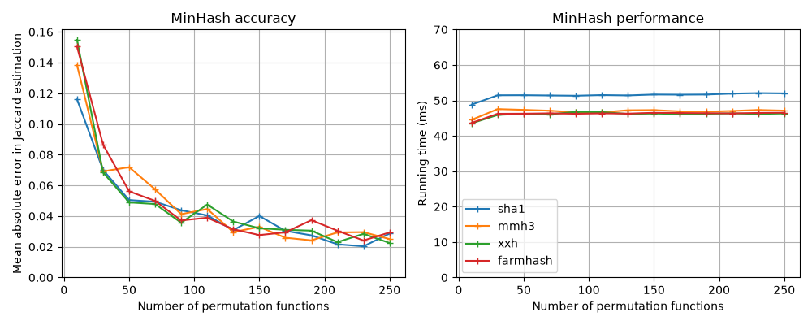
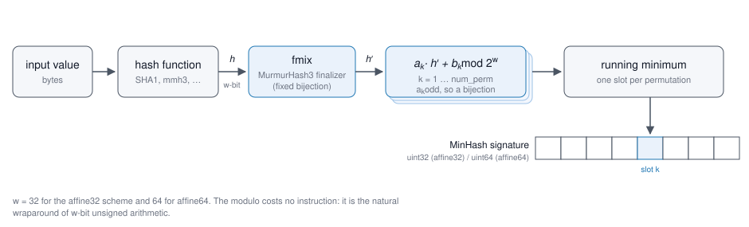
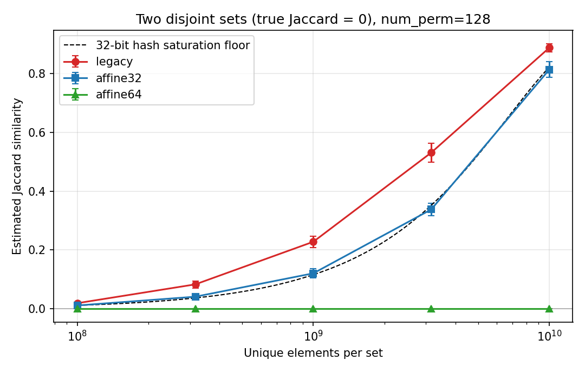
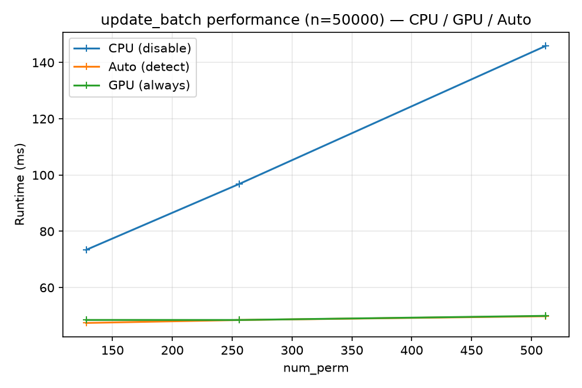
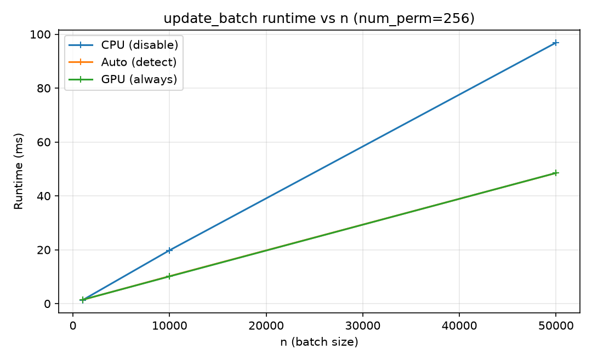

MinHash
datasketch.MinHash lets you estimate the Jaccard
similarity
(resemblance) between
sets of
arbitrary sizes in linear time using a small and fixed memory space. It
can also be used to compute Jaccard similarity between data streams.
MinHash is introduced by Andrei Z. Broder in this
paper.
from datasketch import MinHash
data1 = ['minhash', 'is', 'a', 'probabilistic', 'data', 'structure', 'for',
'estimating', 'the', 'similarity', 'between', 'datasets']
data2 = ['minhash', 'is', 'a', 'probability', 'data', 'structure', 'for',
'estimating', 'the', 'similarity', 'between', 'documents']
m1, m2 = MinHash(), MinHash()
for d in data1:
m1.update(d.encode('utf8'))
for d in data2:
m2.update(d.encode('utf8'))
print("Estimated Jaccard for data1 and data2 is", m1.jaccard(m2))
s1 = set(data1)
s2 = set(data2)
actual_jaccard = float(len(s1.intersection(s2)))/float(len(s1.union(s2)))
print("Actual Jaccard for data1 and data2 is", actual_jaccard)
You can adjust the accuracy by customizing the number of permutation functions used in MinHash.
# This will give better accuracy than the default setting (128).
m = MinHash(num_perm=256)
Better accuracy costs memory more than it costs update speed. A MinHash
keeps one hash value per permutation function, so memory, serialized
size, and the work of whole-signature operations such as
datasketch.MinHash.jaccard(),
datasketch.MinHash.merge(), and LSH indexing all grow linearly
with num_perm. Update time is far less sensitive: applying the
permutations is vectorized and cheap, so hashing the input dominates,
and doubling num_perm from 128 to 256 adds only about 10-35% to
update_batch time in our measurements. The benchmark below shows how
accuracy and running time depend on the number of permutation functions
(one line per hash function, see Use Different Hash Functions).

You can union two MinHash objects using the
datasketch.MinHash.merge() function. This
makes MinHash useful in parallel MapReduce-style data analysis.
# This makes m1 the union of m2 and the original m1.
m1.merge(m2)
MinHash can be used for estimating the number of distinct elements, or cardinality. The analysis is presented in Cohen 1994.
# Returns the estimation of the cardinality of
# all data values seen so far.
m.count()
If you are handling billions of MinHash objects, consider using
datasketch.LeanMinHash to reduce your memory footprint. For
sketches that need no further updates, b-bit MinHash cuts storage
further by keeping only the lowest bits of each hash value.
Permutation Schemes
Since version 2.0.0, datasketch.MinHash supports three
permutation schemes, selected with the scheme constructor argument:
"affine32" (the default), "affine64", and "legacy".
The Affine Permutation Scheme

Every value passed to datasketch.MinHash.update() or
datasketch.MinHash.update_batch() moves through four steps:
The hash function maps the value to a hash value
hof the scheme widthw: 32 bits for"affine32", 64 bits for"affine64".his mixed once with the MurmurHash3 finalizer (fmix), a fixed bijection that spreads every input bit over the whole word. This protects the estimate when the hash function is weak relative to the input, for example sequential integer keys under an identity hash function.Each of the
num_permpermutations maps the mixed valueh'toa_k * h' + b_k mod 2**w, computed inw-bit unsigned arithmetic whose wraparound is the modulo. The multipliera_kis odd, so the map is a bijection on[0, 2**w): distinct hash values can never collide after permutation.Each slot of the signature keeps the minimum value its permutation has seen:
hashvalues[k] = min(hashvalues[k], a_k * h' + b_k).
Two sets place the same value in slot k with probability equal to
their Jaccard similarity, so the fraction of matching slots estimates it.
Because every permutation is a bijection, the permutation step adds no
collisions of its own; the only sources of error are the sampling noise
of num_perm slots and collisions in the input hash itself.
Choosing between affine32 and affine64. The scheme width w is
the width of the input hash space, and that space is the scheme’s one
capacity limit. The hash function gives every element a w-bit
fingerprint. With w = 32 there are only about 4.3 billion distinct
fingerprints, so as sets grow toward that size, more and more
different elements receive the same fingerprint – and the sketch
cannot tell such elements apart. Two sets with no elements in common
therefore still share some fingerprints, and their estimated similarity
rises above zero through no fault of the permutations. This unavoidable
baseline is the saturation floor: the similarity that input-hash
collisions alone create, and the level below which no permutation
scheme can reach.
The experiment below makes the floor visible. Two disjoint sets (true
Jaccard similarity 0) of up to 10 billion simulated hash values each
are sketched with num_perm=128; the dashed curve is the analytic
32-bit floor. affine32 sits on the floor at every size – its
permutations add no collisions of their own – while affine64,
whose 64-bit fingerprints effectively never collide, reads zero
throughout. (The red curve is the scheme used before 2.0.0, covered in
the next section.) See
benchmark/sketches/minhash_scheme_bias_benchmark.py for the
experiment code.

Estimated Jaccard similarity of two disjoint sets versus set size
(mean of 6–16 seeded trials per point, 95% confidence intervals;
the per-trial data is in scheme_bias_results.json next to the
figure).
In numbers, the 32-bit floor is about +0.001 at 10 million elements per set, +0.01 at 100 million, and +0.12 at a billion. Hence:
"affine32"(the default) stores hash values asuint32. Up to roughly 100 million elements per set the floor (at most about +0.01) stays below the sampling error of anum_perm=128signature (about 0.03-0.04), so for most workloads it gives the same accuracy in half the memory."affine64"runs the same construction over 64-bit hash values: twice the signature memory and a somewhat slower update (1.3-2x theaffine32update time, depending on platform). Its hash space does not saturate at any realistic scale – the same measurement reads 0.0000 out to 10 billion elements per set – so use it once sets grow past the tens of millions, or whenever a percent-level positive bias matters. Its default hash function isdatasketch.hashfunc.sha1_hash64(), and a customhashfuncmust return 64-bit integers.
# 64-bit scheme for billion-scale sets.
m = MinHash(num_perm=128, scheme="affine64")
MinHash objects created with different schemes cannot be compared, merged,
or unioned: jaccard(), merge() and union() raise ValueError
on a scheme mismatch.
Why the legacy scheme was replaced
The scheme used before 2.0.0 permuted hash values with universal hashing
modulo the Mersenne prime 2**61 - 1 and truncated the result to 32
bits. Folding the 61-bit range onto 32 bits turns the combined step into
a random function rather than a permutation: unlike the affine
bijections, it introduces collisions of its own, on top of the
input-hash collisions that set the saturation floor
(issue #212). The
red curve in the figure above shows the consequence: at a billion
elements two disjoint sets measure about 0.23 – nearly twice the floor
– and the excess bias persists at every scale.
The affine schemes remove the bias and are also cheaper: end-to-end
update_batch measures about 4x (affine32) and 2x (affine64)
faster than legacy on x86-64 servers at num_perm=256 – about 2x and
1.5x on Apple Silicon, where fast 64-bit integer division makes legacy’s
modulo step less of a penalty – and affine32 signatures take half
the memory. scheme="legacy" remains only for working with sketches
created by earlier versions.
Migrating from versions before 2.0.0
All hash values produced by the default scheme change in 2.0.0: sketches and
LSH indexes persisted with earlier versions cannot be mixed with newly
created sketches unless you pass scheme="legacy".
Pickled
MinHash,LeanMinHashandbBitMinHashobjects andLeanMinHashbuffers written by earlier versions load correctly and are markedscheme="legacy"; the legacy scheme keeps producing bit-identical hash values.LeanMinHashandbBitMinHashobjects withscheme="legacy"serialize to the exact same bytes as earlier versions, so they remain readable by programs running datasketch 1.x.Constructing a sketch from raw values –
MinHash(hashvalues=...),MinHash(permutations=...)orLeanMinHash(seed=..., hashvalues=...)– now requires passingschemeexplicitly. Hash values carry no trace of the scheme that produced them, so a default would silently mislabel values stored by 1.x and defeat the cross-scheme guards. Passscheme="legacy"for values created before 2.0.0.LSH indexes (
MinHashLSH,MinHashLSHForest,MinHashLSHEnsemble,MinHashLSHBloom,AsyncMinHashLSH) learn the scheme from the first inserted MinHash and raiseValueErrorwhen a MinHash of a different scheme is inserted or used as a query. An index attached to pre-existing external storage (e.g. Redis) cannot know what scheme the stored data was built with and re-learns it on the first insert; until then queries of any scheme are accepted unchecked, so rebuilding such indexes is still up to you.To adopt the new default, recompute sketches from the original data and rebuild any persisted LSH index.
The pre-mix protects against naturally structured inputs (for example sequential integers combined with a weak or identity hash function), but a quality
hashfuncis still recommended; the default SHA1-based functions are safe.
Use Different Hash Functions
MinHash by default uses the SHA1 hash function from Python’s built-in
hashlib library.
You can also change the hash function using the hashfunc parameter
in the constructor.
# Let's use MurmurHash3.
import mmh3
# We need to define a new hash function that outputs an unsigned
# 32-bit integer.
def _hash_func(d):
return mmh3.hash(d, signed=False)
# Use this function in MinHash constructor.
m = MinHash(hashfunc=_hash_func)
Note that the hash function must produce integers matching the scheme
width: 32-bit values for "affine32" (the default) and "legacy",
and 64-bit values for "affine64".
The benchmark figure near the top of this page compares the default SHA1
with mmh3 (MurmurHash3),
xxhash, and
Farmhash: the accuracy is the
same for all of them, and the running time differences are small because
per-update overhead, not the hash computation, dominates on short
inputs. Hash function choice matters more for long inputs, or when
hashing in bulk outside of datasketch.MinHash.update(). You can
run the comparison yourself with
benchmark/sketches/minhash_benchmark.py.
GPU usage (experimental)
datasketch.MinHash can optionally run part of
datasketch.MinHash.update_batch() on a CUDA GPU
via CuPy. Hashing and permutation generation remain on CPU;
only the permutation application and min-reduction may use the GPU.
Control behavior with the constructor argument gpu_mode:
'disable'(default): always CPU.'detect': use GPU if available, otherwise fallback to CPU.'always': require GPU; raisesRuntimeErrorif no CUDA device is available.
# Force CPU only
m = MinHash(num_perm=256, gpu_mode="disable")
m.update_batch(data)
# Require GPU (raises RuntimeError if no CUDA device)
m = MinHash(num_perm=256, gpu_mode="always")
m.update_batch(data)
Install. CuPy is an optional dependency (not installed by default).
See CuPy’s docs for wheels matching your CUDA version, e.g.
pip install cupy-cuda12x for CUDA 12. On machines that have an NVIDIA
driver but no local CUDA Toolkit (typical for cloud GPU containers), use
pip install "cupy-cuda12x[ctk]" so CuPy’s JIT can find the CUDA headers;
otherwise update_batch fails at first use with
RuntimeError: Failed to find CUDA headers.
Runtime comparisons. The figures below were measured on an NVIDIA
Tesla T4 (CuPy 14.1, CUDA 12.9) with the default affine32 scheme;
results vary by hardware and CuPy version. Because input hashing always
runs on CPU, GPU runtime is dominated by hashing and stays nearly flat
as num_perm grows – which is where the speedup over CPU comes from.

Update time for a fixed batch size (n = 50,000) as num_perm grows.
GPU shows increasing speedups as num_perm increases because more parallel
work amortizes transfer/launch overhead.

Update time for a fixed number of permutations (num_perm = 256)
as batch size increases. Small batches are often CPU-favorable due to
transfer overhead; larger batches benefit from GPU parallelism.